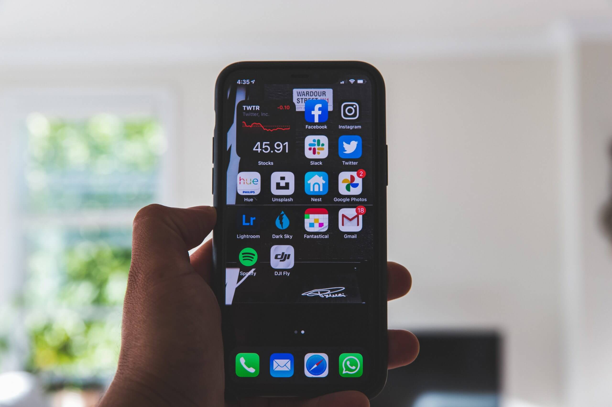

Top 10 Aplicaciones para Android en 2024
Introducción
En este artículo, te presentamos las 10 mejores aplicaciones para Android en 2024. Estas apps destacan por su utilidad, innovación y popularidad entre los usuarios. Desde herramientas de productividad hasta entretenimiento, hay algo para todos.
1. WhatsApp
WhatsApp sigue siendo la aplicación de mensajería más popular, ofreciendo funciones de mensajería instantánea, llamadas de voz y video, y cifrado de extremo a extremo.
2. TikTok
TikTok ha revolucionado el contenido de video corto. Con su algoritmo inteligente, te muestra videos que se ajustan a tus intereses, manteniéndote entretenido durante horas.
3. Spotify
Spotify es la aplicación líder en streaming de música, ofreciendo millones de canciones, listas de reproducción personalizadas y podcasts.
4. Google Maps
Google Maps es esencial para la navegación. Ofrece indicaciones precisas, tráfico en tiempo real y recomendaciones de lugares cercanos.
5. Netflix
Netflix sigue siendo el rey del streaming de video, con una amplia variedad de series, películas y documentales para todos los gustos.
6. Microsoft Office
La suite de Microsoft Office para Android permite crear y editar documentos de Word, Excel y PowerPoint desde cualquier lugar, siendo una herramienta esencial para la productividad.
7. Instagram
Instagram es la plataforma de redes sociales perfecta para compartir fotos y videos, seguir a tus amigos y descubrir contenido inspirador.
8. Duolingo
Duolingo es una aplicación fantástica para aprender idiomas, con lecciones interactivas y un enfoque divertido para el aprendizaje.
9. Adobe Lightroom
Adobe Lightroom es una poderosa herramienta para la edición de fotos, ideal para fotógrafos aficionados y profesionales.
10. Evernote
Evernote es perfecta para tomar notas y organizar tus ideas. Con sincronización en la nube, puedes acceder a tus notas desde cualquier dispositivo.
Conclusión
Estas aplicaciones destacan por su utilidad y calidad, mejorando tu experiencia con tu dispositivo Android en diversas áreas. Descárgalas y descubre por qué son las favoritas de millones de usuarios.
Publicidad